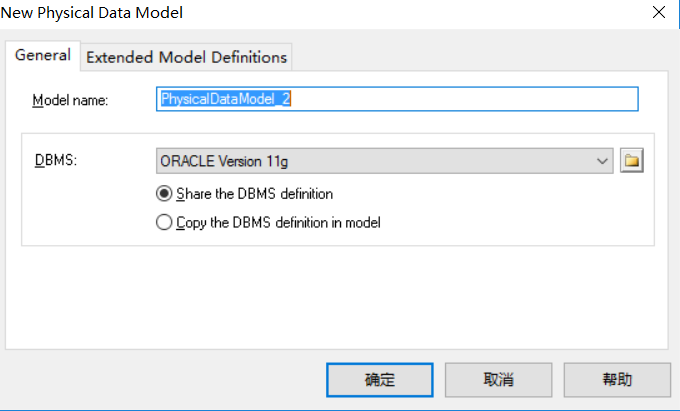
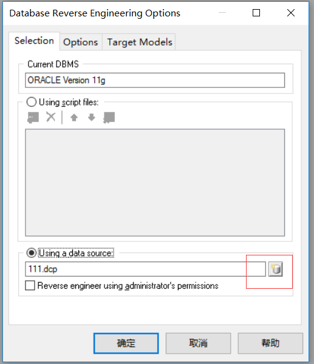
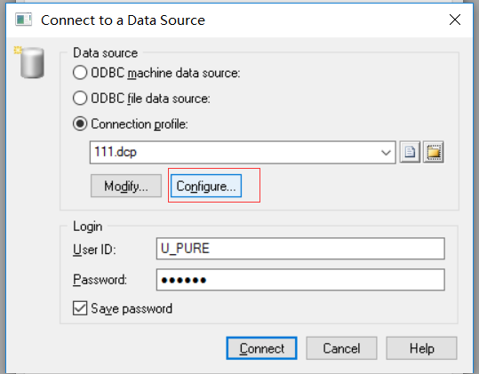
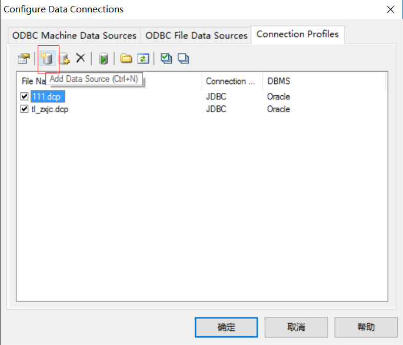
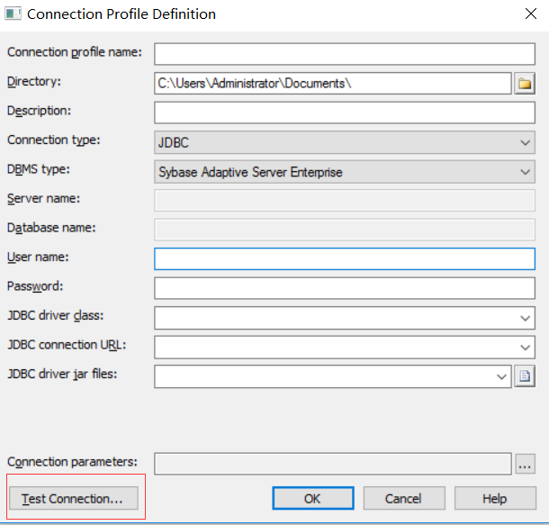

数据库生成pdm
Category:
数据库
发表:
更新:
如何使用powerdesigner根据数据库生成pdm。
由于powerdesigner是32位的应用程序，所以需要下载32位的JDK。
- 配置系统变量
CLASSPATH = E:\Workspaces\my-jar\mysql-connector-java-5.1.7-bin.jar （如果需要反转Oracle数据库，这里的值是Oracle驱动包的路径）
JAVA_HOME = D:\Java\jdk1.6.0_13\;
Path = %Path%;% JAVA_HOME %\bin; - PowerDesigner配置
PowerDesigner Tools –> General Options –> Variables：
JAR D:\Java\jdk1.6.0_13\bin\jar.exe
JAVA D:\Java\jdk1.6.0_13\bin\java.exe
JAVAC D:\Java\jdk1.6.0_13\bin\javac.exe
JAVADOC D:\Java\jdk1.6.0_13\bin\javadoc.exe - 打开Powerdesigner，文件–>Reverse Engineer –> Database…
 - 使用数据源
 - 配置数据库连接
 - 添加一个数据源并测试连接

